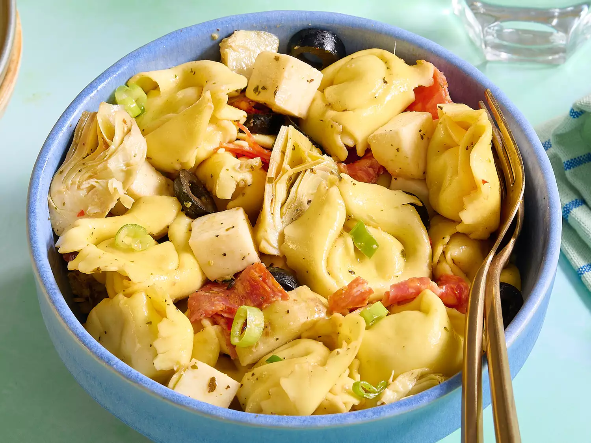

Monday: Tortellini Salad

Description
This tortellini salad is made with cheese tortellini with pepperoni, mozzarella, olives, and artichoke hearts. Great for picnics or a nice summertime meal.
Ingredients
Tortellini Salad
- 1 (16 ounce) package refrigerated cheese tortellini
- 1 (6.5 ounce) jar marinated artichoke hearts, drained and chopped
- 6 ounces mozzarella cheese, diced
- 4 ounces sliced pepperoni, quartered
- 1 (2.25 ounce) can sliced black olives
- 2 green onions, sliced
Dressing
Home